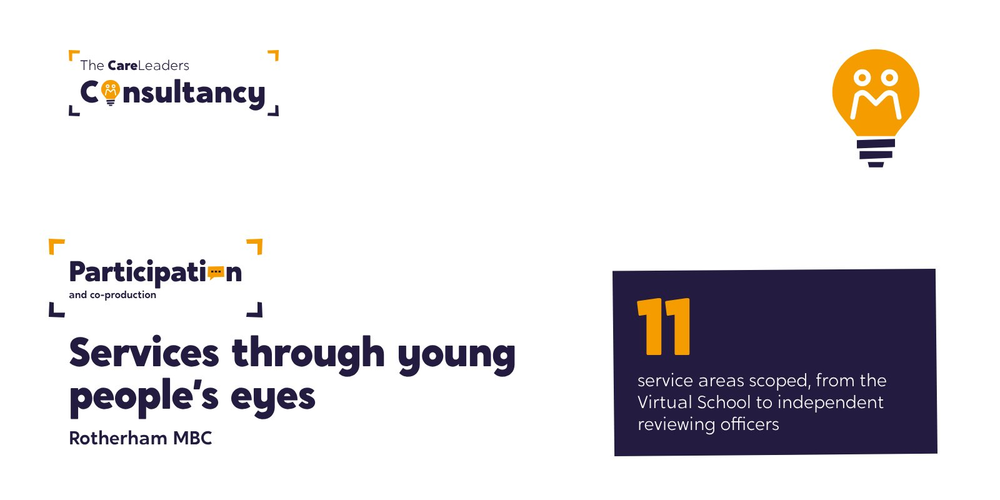

Rotherham MBC: a scope of children’s services through young people’s eyes
In 2017 we asked young people, care leavers and the professionals around them how Rotherham’s children’s services looked from where they stood. The scope covered 11 service areas, and within months the council had moved and strengthened its participation service.

The starting point
Rotherham had little youth participation built into its services. There was no active care leavers council, and participation sat within Early Help with very little funding. The scope set out to show how each part of children’s services looked to the young people using it, and what would need to change for them to have a real say.
What we heard
We held conversations and scoping meetings with each group. Young people told us where the system got in their way: rules that labelled them, processes that were hard to use, and support they didn’t know existed. Care leavers praised their workers, but said leaving care support was poorly advertised. Designated teachers told us how pupils felt about taxi escorts walking them into school: “embarrassing” and “intimidating”.
What we did
- June 2017ScopeConversations with 11 groups, from young inspectors to independent reviewing officers
- ReportOne reportWhat each group told us, with recommendations for every service area
- November 2017ReviewBack to see what had changed since the scope
How we worked
Conversations
We met each group in person and talked, rather than sending out surveys.
The whole system
Covering 11 service areas meant the picture was of the whole system, not one team.
Back to check
We returned five months later to see what had actually changed.
Luke led the scope, bringing his own experience of care together with his professional work with councils on youth participation and leaving care.
What changed
Our follow-up review in November 2017 recorded the changes already made. Participation moved from Early Help into the Looked After Children service, with more money for it and training fees young people earned ring-fenced for participation. A three-tier participation model was agreed, a building care leavers hadn’t known about became the Leaving Care Hub, and Rotherham joined The House Project. These changes come from our own follow-up review.
See the work
What we made, and what it looked like.
Conversations
Young people, care leavers and professionals on how Rotherham looked through their eyes.
The whole system
Findings across the services young people touch, back to the council to check.